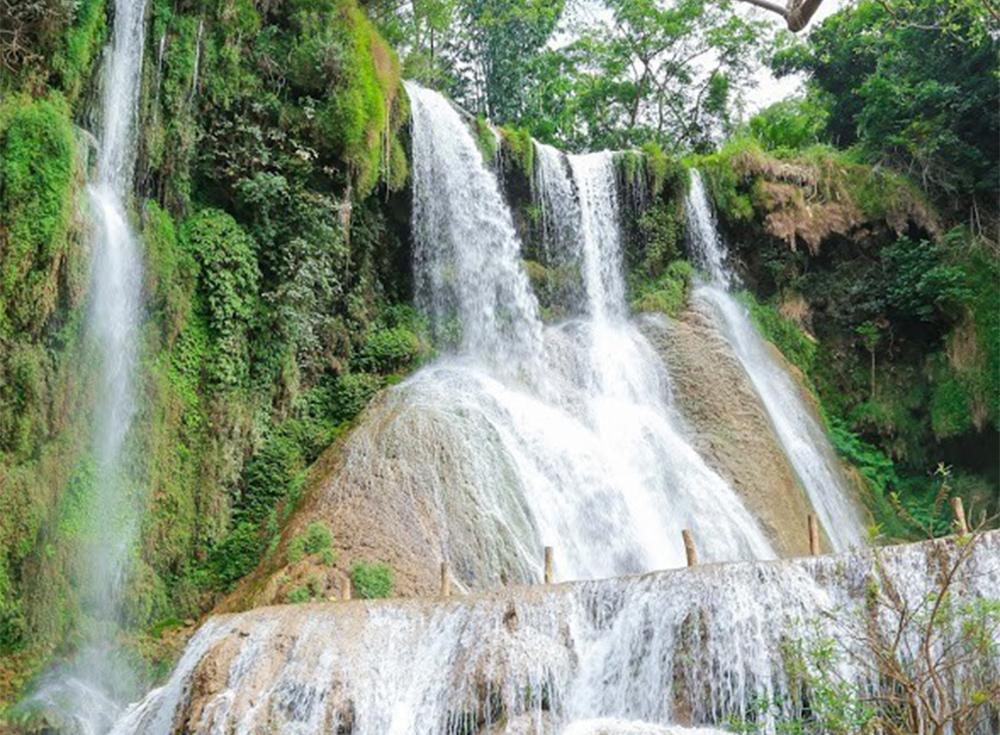
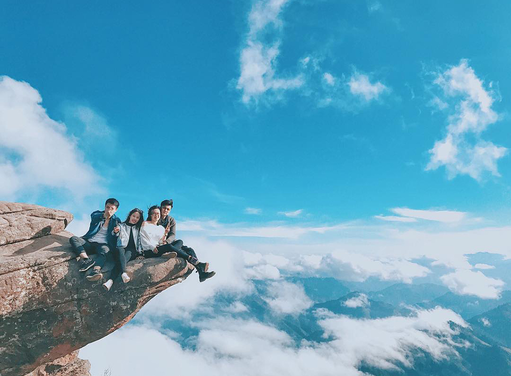
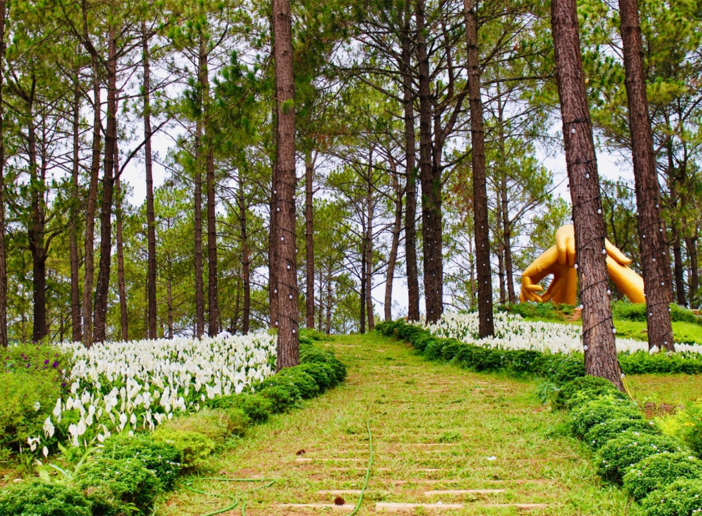
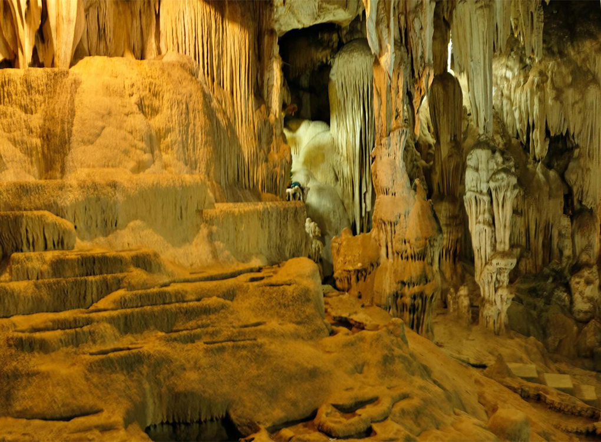

Tour Tà Xùa - Bắc Yên 2 ngày 1 đêm
3.620.000 vnđ
Giới Thiệu
Nằm ở huyện Bắc Yên, tỉnh Sơn La, Tà Xùa là ngọn núi mà dân mê leo núi – chụp ảnh nhất định sẽ phải đến một lần trong đời. Tour săn mây Tà Xùa 2 ngày 1 đêm sẽ mang đến cho du khách cảm giác “xê dịch” tuyệt vời và chân thực nhất. Tà Xùa được ca ngợi là một trong những thiên đường mây đẹp nhất ở miền Bắc. Những ngày chớm thu, dân tình lại nô nức rủ nhau tới Tà Xùa thưởng mây, ngắm núi đồi hùng vĩ. Đứng trước biển mây Tà Xùa, ta có cảm giác như đang đi lạc vào một chốn thiên đường tuyệt diệu bị bỏ quên nơi hạ giới.
  Thời gian như chậm lại ở chốn “bồng lai tiên cảnh” này.
Từ Mộc Châu đi Sơn La, từ Sơn La sang Điện Biên, đường 6 được xem như quốc lộ thơ mộng nhất của vùng Tây Bắc trong mùa hoa ban.
Lịch Trình
NGÀY 01: HÀ NỘI - BẮC YÊN - TÀ XÙA (ĂN TRƯA, TỐI)
6h00: Xe và HDV đón Quý khách tại điểm hẹn rạp xiếc trung ương, 67 Trần Nhân Tông, khởi hành đi săn mây Tà Xùa. Đoàn ăn sáng ở nhà hàng trên đường đi (Chi phí tự túc).
Quý khách dừng nghỉ và tham quan đồi chè Thanh Sơn Phú Thọ.
10h00:
Đến Hồ Suối Chiếu, Quý khách lên thuyền du lịch thăm quan lòng hồ, ngoạn cảnh non nước canh biếc trữ tình như bản tình ca giữa núi rừng Tây Bắc. Nước hồ xanh dưới những tia nắng vàng, núi đồi trùng điệp, thấp thoáng những nếp nhà sàn của người dân tộc tạo nên bức tranh thủy mặc yên bình giữa đất trời.
Thăm hồ xong, nếu có nhu cầu, thuyền sẽ đua quý khách đến khoáng nóng Ban Mai retreat. Quý khách tự do tắm khoáng tại Ban Mai retreat, ngâm mình trong nguồn khoáng nóng tự nhiên giúp tăng cường sức khỏe. ( chi phí tự túc).
Trưa: Đoàn ăn trưa tại nhà hàng ven hồ.
Chiều: Tiếp tục HDV đưa quý khách di chuyển tới Hồ thủy điện checkin đồi thảo nguyên, mỏm cá heo, sông Làng Sáng và cây cô đơn.... Cung đường này có cơ hội đón hoàng hôn và phóng tầm nhìn toàn bộ thị trấn từ trên cao xuống.
(Nếu còn thời gian đoàn sẽ được check in mỏm lạc đà và đồi chè cổ thụ hàng trăm năm tuổi). Sau đó, đoàn di chuyển về homestay nhận phòng nghỉ ngơi.
Tối: Quý khách thưởng thức bữa tối ăn lẩu trong không khí lạnh của Tà Xùa về đêm.
NGÀY 02: SỐNG LƯNG KHỦNG LONG - SĂN MÂY TẠI ĐỈNH TÀ XÙA - HÀ NỘI (ĂN SÁNG, TRƯA)
Sáng:
Đoàn dậy sớm vệ sinh cá nhân và dùng bữa sáng tại nhà hàng, xe và HDV sẽ đưa đoàn lên sống lưng khủng long tại Háng Đồng. Quý khách tự do tham quan, check in sống lưng khủng long. Vào những ngày thời tiết đẹp, quý khách sẽ được chiêm ngưỡng biển mây Tà Xùa mở ảo và những dãy núi nối nhau không dứt phía xa.
Ngoài ra, đoàn có thể ghé Thào Coffee Tà Xùa, thưởng thức tách cà phê nóng hổi và dõi mắt nhìn ra núi đồi hùng vĩ xung quanh (Chi phí đồ uống tự túc).
Trưa:
Quý khách ăn trưa tại nhà hàng
Sau bữa trưa, xe đưa đoàn về Hà Nội. Trên đường về sẽ dừng chân tại xã Mường Thải, huyện Phù Yên. Đoàn ghé thăm quan chụp hình tại vườn cam Hoan Yên, quý khách có thể tự tay hái cam và mua về làm quà cho người thân.
Tối:
Đoàn về đến Hà Nội, chia tay kết thúc chuyến đi Tà Xùa, một trải nghiệm thực thụ của một dân du lịch chuyên nghiệp.
Dịch Vụ
GIÁ BAO GỒM:
- Xe ô tô 16/29 du lịch đời mới đưa đón suốt hành trình
- HDV kinh nghiệm, nhiệt tình suốt hành trình
- Homestay tại Tà Xùa, sạch sẽ tiện nghi, phòng riêng
- Thuyền thăm quan hồ suối Chiếu.
- Ăn uống theo chương trình (2 Bữa chính 120.000đ/người + 1 bữa tối ăn lẩu 180.000đ/người + bữa sáng)
- Bảo hiểm du lịch suốt tuyến, mức cao nhất 30.000.000đ/người/vụ.
- Nước uống 01 chai/người/ngày.
- Vé thăm quan theo hành trình.
KHÔNG BAO GỒM:
- Chi phí cá nhân.
- Tiền tip lái xe, HDV.
- VAT.
- Vé tắm khoáng nóng Ban Mai retreat.